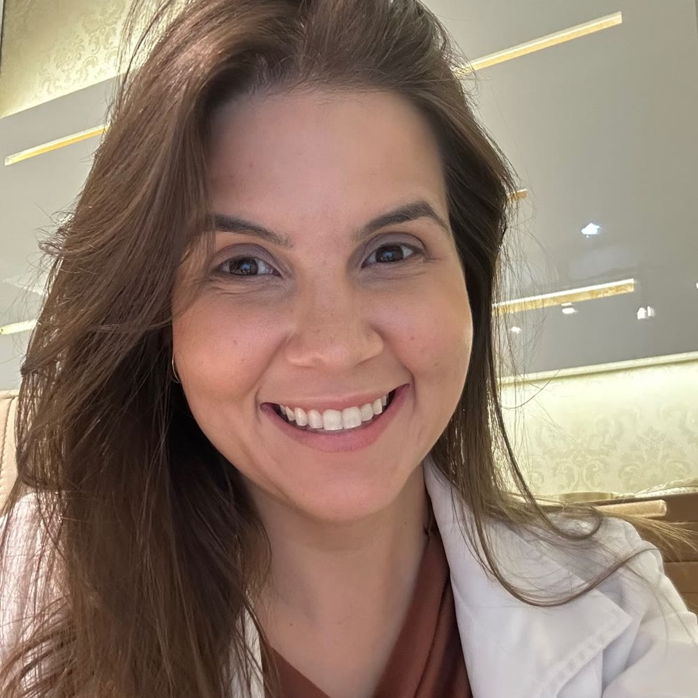

Ligadura elástica de hemorroidas
Um dos recursos possíveis, discutido depois da avaliação.
ColoproctologiaNatal · RN
Coloproctologista e cirurgiã geral. Doenças do intestino grosso, reto e ânus, para adultos, no Tirol.
Promover saúde e bem-estar com informação verdadeira e confiável.
4,9nota no Google · 39 avaliações
Áreas de atuação
Funcionamento intestinal
A constipação é um problema multifatorial. Entender a causa vem antes de repetir um cuidado que não esclareceu o quadro.
Conhecer o cuidado →Doença hemorroidária
Diagnóstico e possibilidades de cuidado.
Conhecer →Dor ao evacuar
Dor ao evacuar e avaliação clínica.
Conhecer →Investigação
Investigação e continuidade do cuidado.
Conhecer →Seguimento
Cuidado individual após procedimentos.
Conhecer →Também fazem parte da atuação: prevenção de incontinência fecal, cirurgia laparoscópica colorretal e cirurgia oncológica do cólon, reto e ânus. A indicação é sempre individual, definida em consulta.
Quando procurar
“Temos inúmeras hipóteses: doença hemorroidária, dermatites locais, uso indiscriminado de papel higiênico, falha de esvaziamento do reto após evacuação e muitas outras causas.” A avaliação é que mostra qual delas.
Fissura analAlterações de motilidade ou de via de saída não aparecem na colonoscopia. Por isso a investigação começa pela história e pelo exame.
Constipação e evacuaçãoA coloproctologia cuida do intestino grosso, do reto e do ânus. É um assunto de saúde como qualquer outro, conversado com calma e respeito.
Como é a consultaA primeira consulta
Contar quando começou, o que mudou e o que preocupa, sem pressa e sem julgamento.
“A nossa especialidade depende muito de exame físico.” É ele que dá confiabilidade ao diagnóstico.
Entender as possibilidades de cuidado, a indicação individual e o seguimento.
A médica
Camila Glenda Dantas de Medeiros Cunha atende adultos em Natal. “Minha atuação é em doenças orificiais e colorretais.”
Nas palavras da médica
“A constipação é um problema multifatorial. Alterações de motilidade (na velocidade que o intestino funciona) ou de via de saída (do mecanismo nervoso e muscular que envolve a evacuação) não são avaliadas pela colonoscopia.”
Dra. Camila Medeiros · resposta pública da médica ↗
Possibilidades de cuidado
Um dos recursos possíveis, discutido depois da avaliação.
Hemorroidectomia, esfincterotomia interna e tratamento de fissura anal fazem parte da atuação, conforme indicação.
Fistulectomia ou fistulotomia anal, conforme a avaliação individual.
Onde atendo
Onde atendo
Atendimento presencial a adultos, com hora marcada. Confirme dia, hora e condições com a recepção.
Perguntas frequentes
Não. A coloproctologia depende muito do exame físico. A conversa e o exame juntos orientam o diagnóstico e os próximos passos.
Sim. A Dra. Camila atende adultos, presencialmente, em Natal.
Leve os exames e relatórios que já tiver. Novos pedidos dependem da avaliação.
Não. É só um pedido de preferência. A recepção verifica a disponibilidade e confirma manualmente.
Converse com a recepção
Um pedido simples para dar o primeiro passo.
Contato
Clínica Hélice · Tirol · Natal · (84) 99441-8989
Prévia feita pelo Doutor Sob Medida
Textos, fotos, cores e páginas: eu ajusto pelo WhatsApp até ficar do seu jeito.
Sem mensalidade. Domínio .com.br no seu nome, com o 1º ano incluído, e hospedagem.
No seu endereço, por exemplo camilamedeiros.com.br. A disponibilidade eu confiro com você.
JMJoão Mateus · Doutor Sob Medida · ver as condições